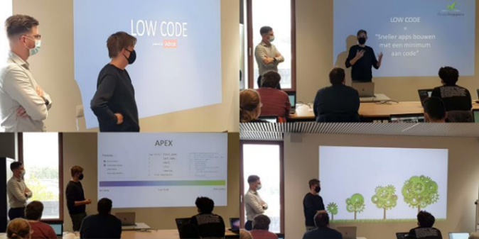
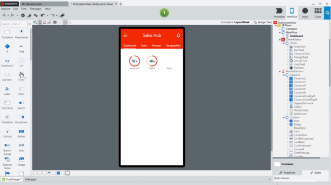

Omschrijving
Deze innovatieroute gaat over low code. Met lowcodeontwikkeling kan het proces van softwareontwikkeling worden versneld omdat applicaties worden opgebouwd uit visuele blokken. Tijdens de innovatieroute hebben we kennisgemaakt met verschillende low code frameworks en hiermee gewerkt.
Kern
Wat als we erin zouden slagen om taalonafhankelijke web en mobiele apps te maken tegen een veel hoger tempo dan dat we nu gewoon zijn? Het antwoord op deze vraag werd uitgebreid besproken tijdens deze innovatieroute.
Deze innovatieroute ging over low code. De innovatieroute “low code” bestond uit 2 dagen waarbij bedrijven uitleg kwamen geven over hoe zij low code gebruiken, welke frameworks ze hiervoor gebruiken en wat de voordelen hiervan zijn volgens hun. Ook hun visie over de toekomst van low code werd bondig besproken.
De eerste dag begon met een algemene uitleg over low code. Hierin legde ze het ontstaan uit van low code alsook de voor- en nadelen ervan. Zo is low code ontstaan omdat er nood is naar snellere applicatieontwikkeling. Alles moet tegenwoordig sneller en goedkoper zijn. Om dit te realiseren werd low code in het leven geroepen. Het zorgt ervoor dat er automatische code gegenereerd wordt aan de hand van visueel programmeren. Met low code kan het ontwikkelingsproces dus aanzienlijk worden versneld. Ook hoeft er minder code te worden geschreven met kans op fouten. Een ander voordeel is dat meer mensen kunnen bijdragen aan de ontwikkeling, niet alleen de programmeurs. Het nadeel van low code is dat een ontwikkelaar afhankelijk is van een bepaalde aanbieder met bijhorende kosten zoals voor gebruikte licenties. Ook zijn ze minder bekend met low code aangezien het een relatief nieuwe vorm van ontwikkelen is.
Aangezien low code integratie biedt met bestaande IT-systemen en platforms zoals Oracle en Microsoft zijn er meerdere frameworks op de markt om te gebruiken. Na de algemene uitleg kwamen er verschillende bedrijven uitleg geven over deze frameworks en hoe zij ermee werken. Zo zijn de bedrijven Grasshopper Academy, iAdvice, Brightfox en Providit hun bedrijf en huidige frameworks komen voorstellen.
Op dag één kwam het bedrijf Brightfox uitleg geven over salesforce. Salesforce is een zeer uitgebreid platform dat vele toepassingen bied, van CRM tot cloud computing. Ook kwam het bedrijf iAdvise spreken over het framework dat zei gebruiken, namelijk Oracle Apex. Op dag twee kwam het bedrijf Providit hun bedrijf voorstellen en meer uitleg geven over hun framework genaamd Outsystems.
Al deze frameworks gebruiken low code om het applicatieproces te versnellen. Elk bedrijf gaf nog eens kort weer wat zij onder low code verstaan en hoe ze dit toepassen binnen hun bedrijf. Ze lieten voorbeelden van het dagelijkse leven zien en toonden aan dat het veel meer voordelen bevat dan het traditioneel programmeren. Na elke uitleg werd er een demo voorzien. Hierbij mochten we meedoen en werd er getoond hoe er gewerkt wordt binnen low code. Deze demo telkens met het framework at gebruikt wordt binnen het bedrijf. Bij elk framework werd het duidelijk dat programmeren bijna volledig grafisch gebeurd.
Elke demo was interessant en liet zien hoe snel er iets gemaakt kan worden met low code. Omdat we dit mee mochten doen konden we dit ook zelf ervaren. Ook was het leuk dat we met meerde frameworks mochten werken aangezien dit liet zien dat er binnen low code ook nog verschillende werkwijzen zijn.
Reflectie
De innovatieroute was uitgebreid, al leek het soms iets te uitgebreid aangezien de uitleg soms wat langdradig werd. Naar mijn mening mochten de demomomenten uitgebreider zijn aangezien het zo zeer duidelijk werd hoe low code in elkaar zit en wat je er allemaal mee kan doen. Ook jammer was dat de verschillende bedrijven elkaar wat overlapten aangezien ze soms dezelfde uitleg gaven. Tijdens deze innovatieroute heb ik veel bijgeleerd over low code, zowel alle voordelen dat het met zich meebrengt, als waarvoor het allemaal gebruikt kan worden. Al deze aspecten waar we over zijn gegaan hebben me een dieper inzicht gegeven op vlak van programmeren. Ze hebben me doen realiseren dat het werken met low code sneller en makkelijker is dan een gehele applicatie coderen zonder een framework als dit. Ik ben blij dat ik voor deze innovatieroute heb gekozen aangezien ik nu weet dat er meerdere mogelijkheden zijn om applicaties te maken. Dat low code hier één van is en dat dit sneller en makkelijker is dan het traditioneel programmeren. Of dit ook daadwerkelijker leuker is om te doen dan het traditioneel programmeren en of ik dit verkies in de toekomst weet ik niet zeker maar het is zeker een mogelijkheid die ik ga overwegen. Ik heb deze innovatieroute gekozen omdat ik mijn kennis wou uitbreiden op vlak van IT en ik nog nooit gehoord had van low code. Low code zal me bijblijven in de toekomst aangezien er meer en meer op gaat worden ingespeeld. Alles qua programmeren zal sneller en makkelijker gaan bij het gebruiken van low code.